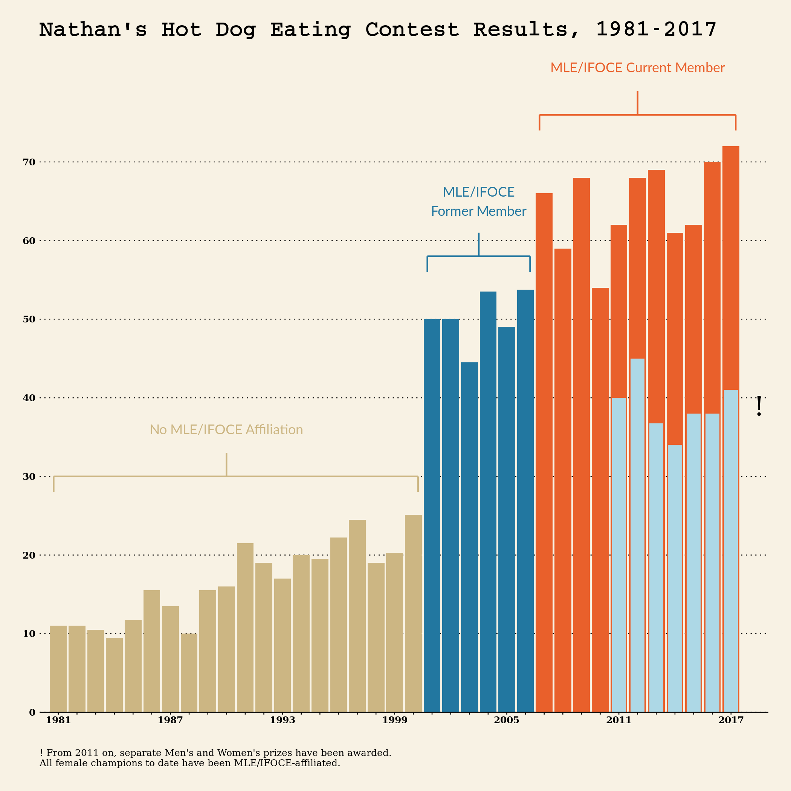

knitr::include_graphics("web.png")
The above graph is the protagonist here. The following description and analysis will be carried out around this plot.
Bar chart.
Contest graph displays the number of hot dogs that Nathan’s Hot Dog Eating Contest winners ate from 1981 to 2017. This graph can be divided into 3 parts based on years. The first one is from 1981 to 2000. During this period, the champions of the contest are no MLE/IFOCE affiliation and the number of winners eaten is less than 30. The second part is from 2001 to 2006. It is visible to the naked eye that the number of winners eaten is much than the first stage, and at this stage, the winners of the contest are MLE/IFOCE former affiliation. The last part is from 2007 to 2017. In this period, based on the graph, there are two colors of bars which is because from 2011 on, separate Men’s and Women’s prizes have been awarded and all champions no matter male or female to data have been MLE/IFOCE-affiliated. On the other hand, there is a clear gap between the number of hot dofs eaten by male and female champions so it is fair to separate Men’s and Women’s prizes. In addition, we can also see that as time goes by, the number of hot dog eaten shows an upward trend.
First of all, you should be able to judge that it is a bar graph and the values of y-axis correspond to the number of cases at each x position. And the x-axis of this graph represents years, from 1981 to 2017 and the y-axis of this graph represents the number eaten by the contest champion every year. Now look at this graph. We could cut this graph into 3 parts according to the MLE/IFOCE affiliation status of the contest champions. Before 2001, all champions to data have not been MLE/IFOCE affiliated. And between 2001 and 2006, the champions of the contest are MLE/IFOCE former affiliation while the champions to data have been affiliated since 2007. Now look at the x-axis from 2011 on, you will find that there are two colors of the bars, and you can find the reason from the annotation signed “!”
Annotation is helpful for readers to see and understand this graph. It helps readers to know the relationship between the champions of the contest and MLE/IFOCE, and it also explains why there are two colors of bars from 2011.
Colors with obvious visual differences can help readers clearly distinguish the categories of the connecting bands. When using colors to differentiate several groups, we should select some colors which are easy to distinguish and nice to colorblind.
Except bar chart type, we could also use line chart to display this data. And the line plot will clearly show us how how the number of hot dogs eaten as times goes by. One key point is different and nice for colorblind colors should be applied for line segments of different periods.
NathanI’s Hot-Dog Eating Contest Lab
The above link has provided a complete process about how to create the graph. You can follow it step by step and then you can re-create the graph by yourself.
Copyright © 2020 Yihua Hu. All rights reserved.